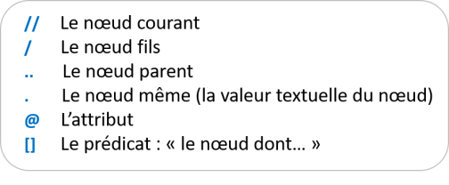

Quelques notions de XPath
Usage du XPath
Le langage Xpath est employé pour identifier un ensemble de nœuds dans les documents XML.
Exemple de document XML :
1
2
3
4
<bookstore>
5
6
<book category="cooking">
7
<title lang="en">Everyday Italian</title>
8
<author>Giada De Laurentiis</author>
9
<year>2005</year>
10
<price>30.00</price>
11
</book>
12
13
<book category="children">
14
<title lang="en">Harry Potter</title>
15
<author>J K. Rowling</author>
16
<year>2005</year>
17
<price>29.99</price>
18
</book>
19
20
</bookstore>
Nous l'utiliserons pour localiser les éléments web dans l'arborescence HTML
Exemple de d'arborescence HTML
1
<html>
2
<h1>Titre de la page</h1>
3
<div>
4
<h2>Titre 1</h2>
5
<p>texte p1</p>
6
<p>texte p2</p>
7
</div>
8
<div class="divine">
9
<h2>Titre 2</h2>
10
<p>texte p3</p>
11
<p>texte p4</p>
12
<a href="http://.."</a>
13
</div>
14
<html>
HTML
Le code HTML d'une application Web contient tous les éléments affichés par le navigateur. Il se constitue
d'éléments (en vert)
d'attributs (en bleu)
de valeurs d'attribut (en rouge)
de texte (en noir)
Les expressions
Le principe de sélection d'éléments en XPath repose sur les notions de chemins et de nœud.

Exemple